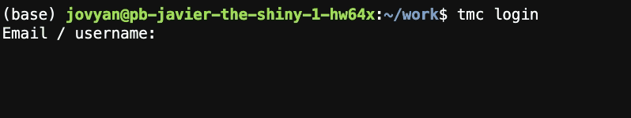
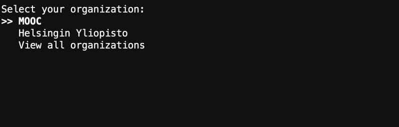

Check your exercises using TestMyCode¶
What is TestMyCode (TMC)?¶
TestMyCode (or TMC for short) is a tool that enables you to submit your Python code for automatic grading.
TMC has a command line interface, which may be accessed through the Terminal application in JupyterLab, as instructed in the previous section.
To get started with TMC, follow the instructions below.
Logging in to TMC¶
To use TMC, you need to register as a user on the mooc.fi website.
Next, open a new Terminal from the JupyterLab Launcher to access the command line interface.

To log in to TMC, type the command tmc login on the command line and press ⏎ to execute the command.
TMC will prompt you for your e-mail address or username.
Enter the e-mail or username that you used to register on the mooc.fi website and press ⏎.
Next, type in your password for the mooc.fi platform and press ⏎.
Important
The cursor will not move when you type into the password prompt, but your password is still being entered.
If the login is successful, TMC will prompt you to select an organization.
Use the arrow keys ↑↓ to navigate the list and choose MOOC. Press ⏎ to confirm your selection.
Next, TMC will prompt you to select a course.
Again, use the arrow keys ↑↓ to navigate the list and choose Applied Language Technology. Press ⏎ to confirm your selection.
This downloads the exercises into a directory named mooc-applied-lt-2022, which should be visible in the JupyterLab File Browser.
Downloading and updating exercises using TMC¶
When new exercises become available as you progress through the course, you must download them to the server so that you can complete them in JupyterLab.
To download exercises, open a Terminal and type the command tmc download and press ⏎.
TMC will prompt you to select a course.
Use the arrow keys ↑↓ to navigate to Applied Language Technology and press ⏎ to confirm your selection.
This will download all available exercises into the directory mooc-applied-lt-2022.
If instructed to do so, you can also update the exercises by typing tmc update and pressing ⏎.
This will update all exercises.
Testing your code locally using TMC¶
After completing an exercise in a Jupyter Notebook, you can test your code by following the steps below.
In this context, testing refers to evaluating whether the Python code you wrote produces the expected output.
To get started, save the Jupyter Notebook by entering the File menu and selecting Save Notebook, or click the save icon at the top of the Notebook.
Next, close the Jupyter Notebook.
Open a new Terminal from the JupyterLab Launcher to access the command line interface.
To test your code, type the command tmc test and press ⏎.
TMC will prompt you to select a course.
Use the arrow keys ↑↓ to navigate to mooc-applied-lt-2022 and press ⏎ to confirm your selection.
Next, TMC will prompt you to select an exercise to test.
Use the arrow keys ↑↓ to navigate the list, select the exercise you want to test and press ⏎.
TMC evaluates your solutions to the exercise and prints out the result, which includes the points given for the exercise.
Open the Jupyter Notebook that contains the exercise to see feedback on your code.
Tip
Instead of closing the Jupyter Notebook, you can simply save the Notebook, run the command tmc test in a Terminal and hit the reload button on your browser to see the feedback written to the Notebook.
Unfortunately, JupyterLab does not automatically refresh Notebooks that have been modified. This also applies to TMC, which modifies the Notebook when adding feedback.
Remember to submit your code to the TMC server when you are done with an exercise to register any points.
Submitting your code to the TMC server¶
When you are finished with an exercise, you must submit your code to the TMC server for final grading. This will also register your points for the exercise.
Tip
You can submit your code to the TMC server even if it does not pass all local tests.
To submit your code to the TMC server, open a Terminal and type the command tmc submit and press ⏎.
Use the arrow keys ↑↓ to navigate to mooc-applied-lt-2022 and press ⏎ to confirm your selection.
Next, TMC will prompt you to select an exercise to submit.
Use the arrow keys ↑↓ to navigate the list, select the exercise you want to submit and press ⏎.
The server will run the tests and return information on any points awarded for the submission.
Important
All points are awarded permanently. Even if you submit a wrong solution afterwards, points will not be deducted.
You can monitor your overall progress by visiting mooc.fi and viewing your profile information.
To view your profile, click your e-mail address / username in the top right-hand corner.


{kind=link}
{kind=link}
{kind=link}
{kind=link}
{kind=link}
{kind=link}
{kind=link}
{kind=link}